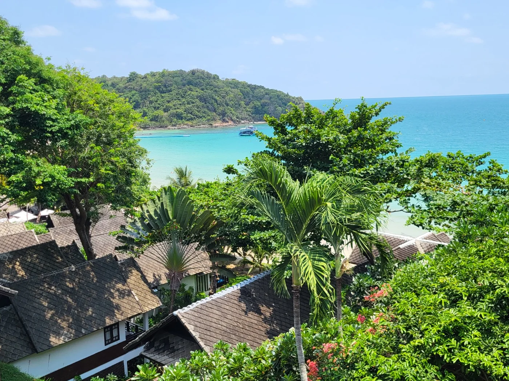
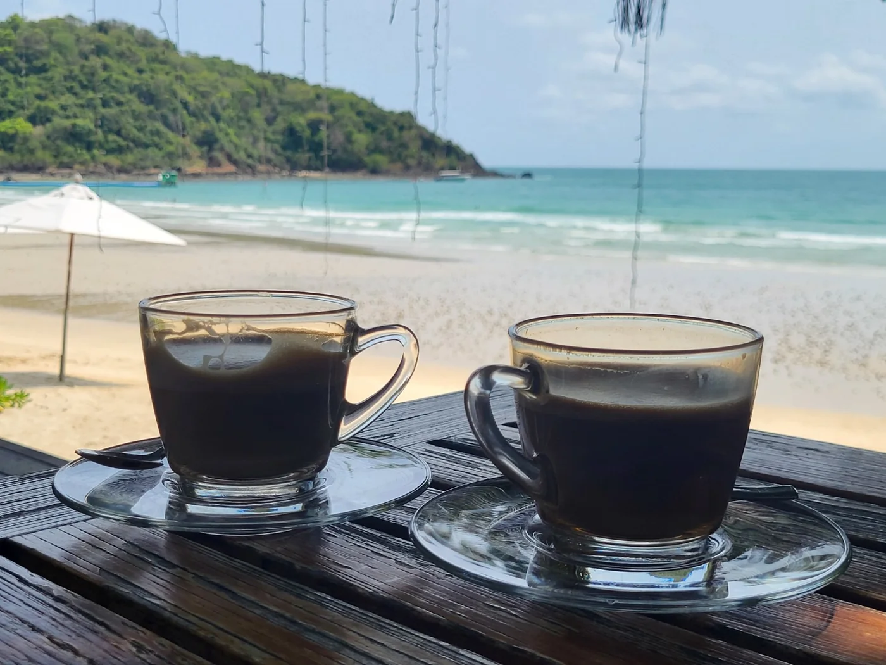
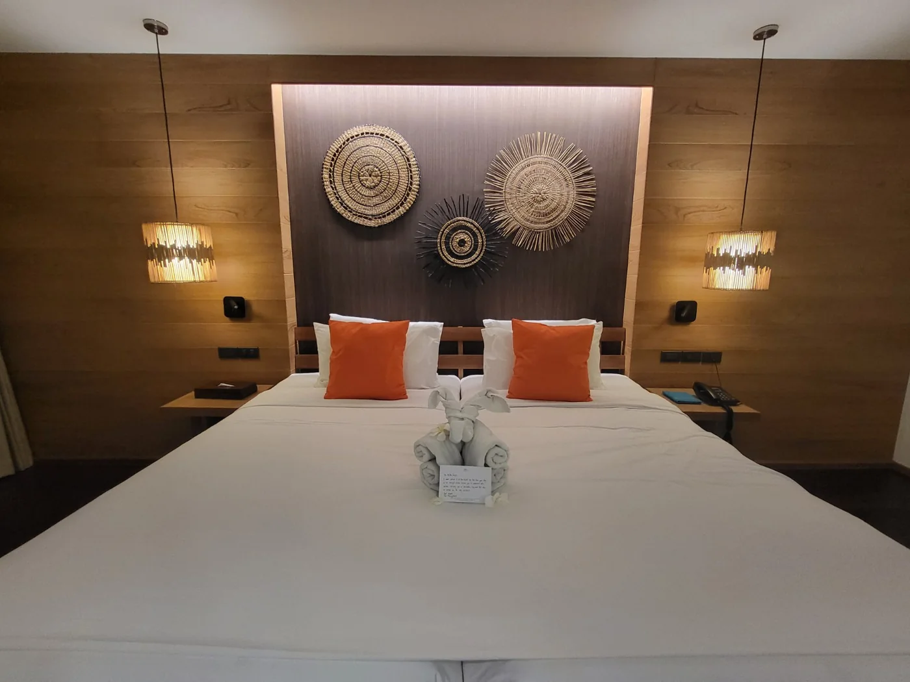
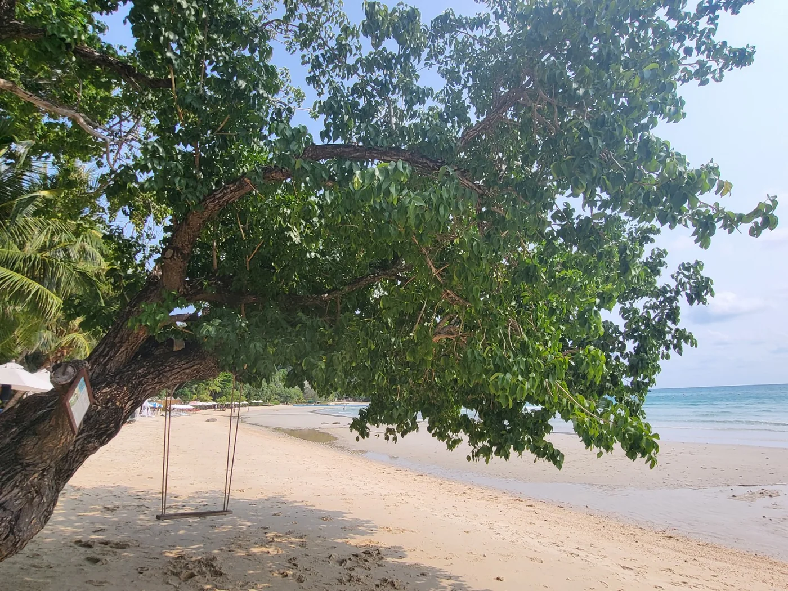

Hotel Finds / Koh Samet, Thailand
First-hand stay · April 2026
Ao Prao Resort, Koh Samet
Highlights:
- A peaceful, romantic stay
- Amazing sunsets
- An easy island escape from Bangkok
Koh Samet is one of the closest beach islands to Bangkok. Allow about 2½–3 hours by car to Ao Prao Pier in Ban Phe, then take a speedboat to the island. See the resort’s transfer details.
From May to October, the Rayong coast near Koh Samet typically gets less rain than the Trat coast near Koh Chang and Koh Kood. See Thailand’s rainfall averages.
See photos from my stay
Photos from my stay


